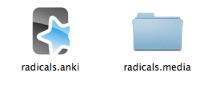
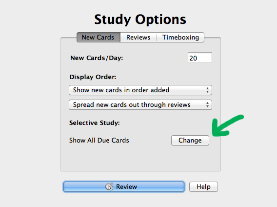
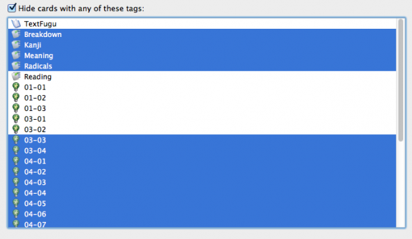

Anki
“It is not enough to be busy; so are the ants. The question is: What are we busy about?” -Henry David Thoreau
Anki is a great program, but it’ll take some setting up and getting used to if you want to take advantage of all it has to offer. There are a few things to learn about it early on that will make your experience way better in the long term (that way you can learn way more too!).
Downloading And Installing Anki
Anki is available in all kinds of operating systems (including mobile), so that shouldn’t be a problem. You can find the download page for Anki here.
- Figure out what operating system you have (it’s probably Windows, OSX, or Linux).
- Click on the symbol for your operating system.
- Click “Download Latest Release” to get Anki.
- Install and give yourself a high five, you’ve earned it.
There are also mobile versions of Anki, but you’ll have to download it through your mobile phone’s app marketplace. The only one that costs money is the iPhone one, but I think it’s totally worth it (I own it and use it to support Anki, which is free on everything else!).
Downloading And Importing Decks
When you’ve downloaded and installed Anki, you’re ready to download decks for it! TextFugu has a bunch of decks to use with TextFugu, but there’s also a bunch of other decks available to you as well. Let’s start with TextFugu Anki decks.
- When you see an Anki deck available on TextFugu, just click on it to download. It will download as a .zip file.
- You’ll need to unzip the zip file. On a Mac, just double click on it and you’ll see a folder appear next to the zip file (when it unzips). On Windows, you may need to download an application that will allow you to unzip the zip file. I recommend 7zip, it’s very good.
 - When you’ve unzipped the zip file, you’ll see either one thing or two things. If there’s media (pictures, audio, etc) with the deck, you’ll see a .media folder and a .anki file. If there is no media, you’ll only see a .anki file. Either way, you’ll want to make sure to move both of those to an Anki folder (or the Anki folder Anki will create for you). If they’re not together in the same folder, the media won’t play (as in, the audio won’t play to give you pronunciation, etc).
- Open the Anki application. Click file>>Import and import the .anki file you just downloaded and unzipped (and put in the Anki folder). When you do this, it should be in your Anki application and keep track of your progress!
- Extra: Even if you’re starting a brand new deck, you should import that newly downloaded deck into Anki. Go to File>>Import and import the new deck and it will ask you to name it. Name it, and it will import everything, including the audio. If you don’t import the first deck, sometimes media has trouble playing, so it’s always best to File>>Import every single time you add something new.
From here on, you just let Anki tell you what to practice and when. Study consistently, and you’re sure to learn a ton!
Setting Up Your “Tags”
Tags are a very important part of using Anki properly. Tags allow the creator of an Anki deck to “tag” different sections of the deck. For example, a lot of TextFugu decks have tags that break up larger decks into groups. The kanji deck is broken up into both number of strokes and groups within the stroke numbers. That way you can tell it to only show you 1 or 2 stroke kanji, that way you’re not seeing 10-stroke kanji before you’re ready (and so on).
When you download a new deck, you’ll have to set the tags up for it. There will be directions telling you what tags to check / uncheck when you first download it.
To set up your tags, you’ll want to open up a deck in Anki, and click “Selective Study” under “Study Options.” Click “Change”

You’ll want to work with the second section in here. The “Hide cards with any of these tags” is where you want to select things. Select all the tags you don’t want showing up. So, if you want to only study tags 01-01, 02-01, 02-02, and 02-03 you’d select everything except these four tags.

Important! Do not hide the main tags. Things like “TextFugu” (the top one), as well as the tags that dictate how you want to see the cards (that’s the second set of tags… Breakdown, Kanji, Meaning, Radicals, and Reading, in this deck). You can get rid of some of these tags, but if you get rid of the top one or all of the second set of tags, you won’t see any new cards. Make sure you leave these ones unselected.
Every deck will have different tags, so just pay attention to what the lesson says and choose your tags carefully! Well chosen tags makes a big difference!
You can even add your own tags to cards to help yourself study better. There’s a lot more you can do with tags, but this will get you started (and get you through TextFugu).
Japanese Support Plugin
Anki also lets you download plugins to make your Anki experience better! The only plugin I recommend (as in, you need this plugin, yo!) is the “Japanese” Plugin. It makes Anki even better at studying Japanese.
To download this plugin, you’ll want to open Anki, and go to File>>Download>>Shared Plugin. From there, you should see the “Japanese Support” plugin. Download and install, and good things will happen! If you’re interested in learning more about what this plugin does, you can read about it here.
A lot of TextFugu decks take advantage of this great plugin, so make sure it’s downloaded or you’ll run into some troubles :(
Importing Tags, Cards, Etc
You can also Import things into current lists. This is good to do so you don’t have a ton of tiny lists (and instead can have one bigger list to work off of… simplicity is nice!). Not all decks on TextFugu are set up to do this (yet), but we’re working towards putting things together and tagging everything so you can import a little (or a lot) at a time.
You will find “import decks” (they will be marked as such) on TextFugu with directions to import these (smaller) decks into other bigger ones. For example, your kanji deck might only have 1-2 stroke kanji in it. When you get to the 3-stroke kanji, you’ll be given a 3-stroke kanji import deck which you’ll want to import into your 1-2 stroke deck. That way, all your kanji cards are in one deck, and all your reviews are also there too. If you have too many Anki decks, you’ll find that it gets harder and harder to review everything, so it’s important to make sure you’re importing.
To import a deck into another deck, you’ll want to:
- Open the Anki deck you want to import into
- Click File>>Import
- Choose the deck / file you want to import
- Import like a boss!
- Optional: If there’s media (i.e. in a .media folder) it should transfer the media for you automatically, but you’ll need to make sure the .media folder is next to the .anki folder you imported. You can also drag and drop your media to the new .media folder created by Anki, but it should be there *crosses fingers*
Other Issues?
Having other issues? Anki has put together some good tutorials taking you through a lot of the basic stuff, including building your own decks!
If you’re having trouble with anything else, definitely take a look at the FAQ and the user manual. There’s a lot of problems solved in there. If you’re reallly having trouble, just shoot us an email and we’ll help you out the best we can!